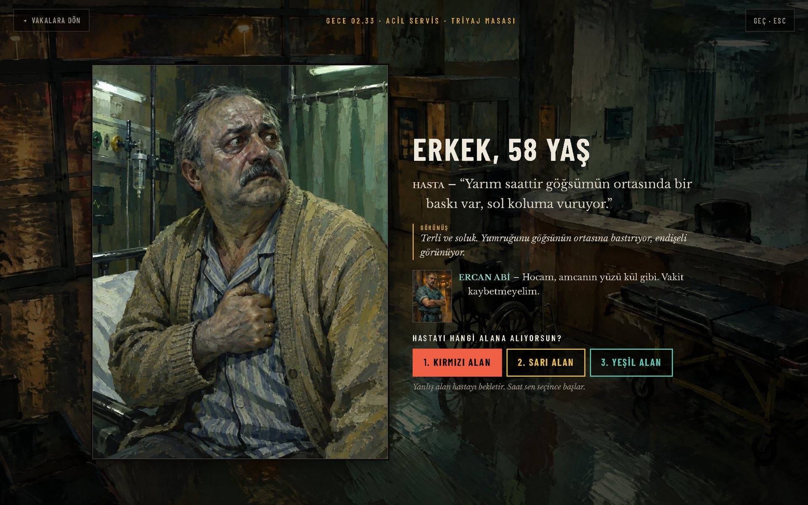
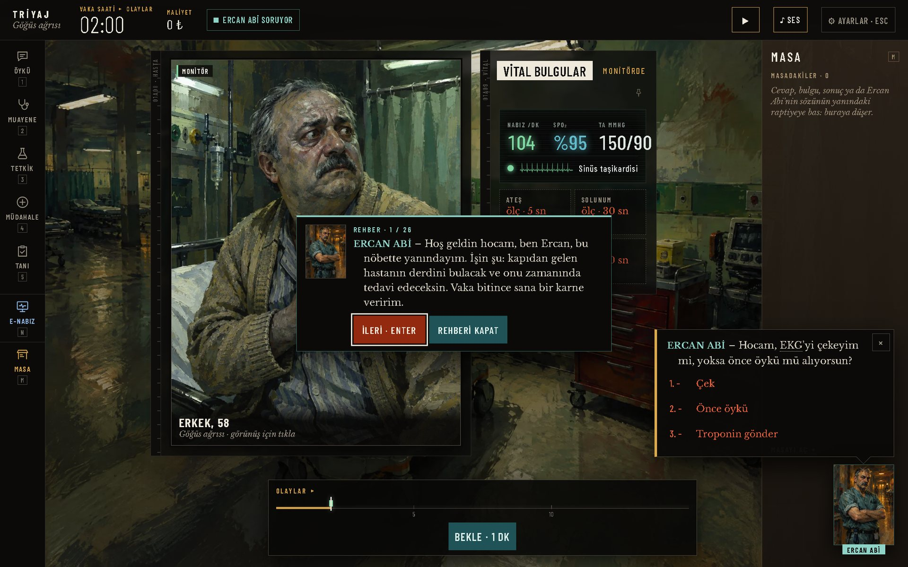
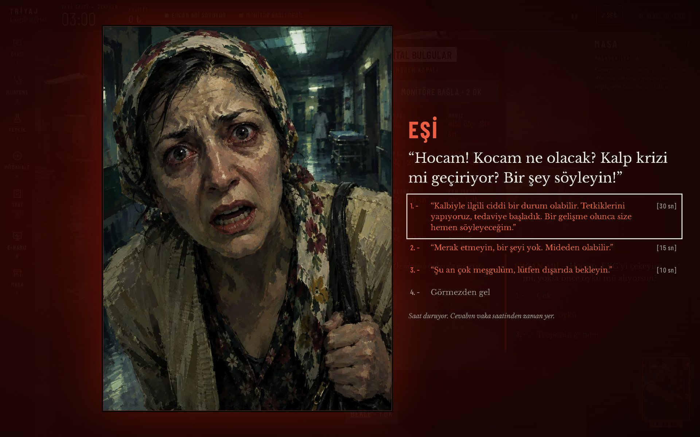
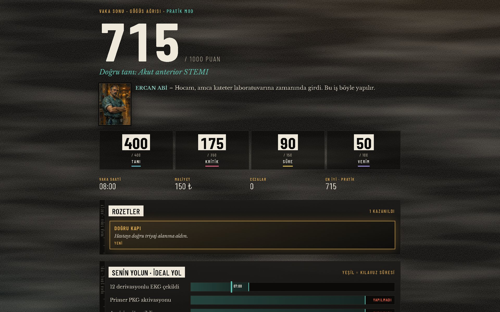

1 · Kapı
Önce hangi alan?
Hasta acilin kapısından girer. İlk kararın triyaj: kırmızı, sarı ya da yeşil alan. Saat, sen seçince başlar.
Ercan Abi: “Hocam, amcanın yüzü kül gibi. Vakit kaybetmeyelim.”
ErtemTech, tıp öğrencilerinin hasta başında karar vermeyi gerçeğinden önce prova ettiği oyunlar yapıyor. İlk ürünümüz Triyaj: tarayıcıda açılan, dört acil vakalık bir klinik vaka oyunu.
Tıp öğrencisi hastalığı kitaptan okuyor. Hasta başında karar vermeyi ilk kez gerçek bir hastayla deniyor.
Bilgi eksikliği değil, prova eksikliği. Hasta başına çıkmadan önce bir yer lazım.
Hasta acilin kapısından girer. İlk kararın triyaj: kırmızı, sarı ya da yeşil alan. Saat, sen seçince başlar.
Ercan Abi: “Hocam, amcanın yüzü kül gibi. Vakit kaybetmeyelim.”
Soruyu klavyeyle kendin yazarsın. Muayene edersin, e-Nabız'da geçmişine bakarsın, monitörü bağlarsın. Bulduğun her şey masaya düşer.
Her tetkik ve müdahale vaka saatinden zaman yer. Yanlış sıra hastayı kötüleştirir. Bir yandan da kapıda hasta yakını cevap bekler.
Vaka bitince attığın her adım, kılavuzdaki ideal yolla yan yana konur. Neyi zamanında yaptığını, neyi atladığını görürsün.
Ercan Abi: “Hocam, amca kateter laboratuvarına zamanında girdi. Bu iş böyle yapılır.”




Hasta acilin kapısından girer. İlk kararın triyaj: kırmızı, sarı ya da yeşil alan. Saat, sen seçince başlar.
Soruyu klavyeyle kendin yazarsın. Muayene edersin, e-Nabız'da geçmişine bakarsın, monitörü bağlarsın.
Her tetkik ve müdahale vaka saatinden zaman yer. Yanlış sıra hastayı kötüleştirir.
Vaka bitince attığın her adım, kılavuzdaki ideal yolla yan yana konur.


Hasta“Yarım saattir göğsümün ortasında bir baskı var, sol koluma vuruyor.”
Terli ve soluk. Yumruğunu göğsünün ortasına bastırıyor, endişeli görünüyor.
Hastayı hangi alana alıyorsun?
Dört hasta, bir hemşire, bir sen. Vakaları tıp öğrencileri yazıyor, her biri kılavuza göre kuruluyor.

“Hoş geldin hocam. Kapıda bir hasta var, nereye alalım?”
Bir hastanın üstüne gel ya da dokun: beklerse ne olacağını gör.
Tıpta yanlış bilgi oyun hatası değildir.
Oyuncu soruyu kendi cümlesiyle yazar. Bir eşleştirme algoritması onu önceden hazırlanmış yüzlerce sorudan birine bağlar. Muayene, tetkik ve tedavi seçimleri çoktan seçmelidir. Oyundaki her cevap önceden yazılmış ve kontrol edilmiştir; her vaka yayına girmeden önce uzman hekim onayından geçecek.
Emin olamadığında oyun tahmin etmez, en yakın soruları önerir.
Ekibi tanımayan 5. sınıf bir tıp öğrencisi, tek bir vakayı denemek için oturdu.
Bir saate yakın kalkmadı. Dört vakanın dördünü bitirdi.
Bugün ekipte. Bizim için üç yeni vaka yazıyor.
İlk saha testi. Verdiği geri bildirimlerin üçü aynı gece oyuna girdi.
Hedefimiz tıp ders kitaplarının yol arkadaşı olmak. Dil kitaplarının yanında nasıl dinleme uygulaması varsa, tıp kitabının her bölümünün yanında da oynanabilir bir hasta olacak.
Dört acil vakası oynanabiliyor. Telefona uygulama gibi eklenebiliyor. İlk saha testi yapıldı.
Vakalar uzman hekim onayından geçiyor. Kullanıcı testleri genişliyor, fakültelerle görüşüyoruz.
Öğrenci bölümü okur, kitaptaki QR kodu okutur, o bölümün hastasında karar verir.
Hocalar kendi vakalarını ekler. Her fakülte kendi hocalarının vakalarıyla çalışır.
Acil ilk servisimiz. Diğer branşlar sırayla gelecek.
Çekirdeği öğrenciye her zaman ücretsiz. Yayınevi ve fakülte lisanslarıyla dönen bir model kuruyoruz.
Biri kodu yazıyor, ikisi hastayı biliyor.
Triyaj'ın oyununu, sesini ve bu siteyi yaptı.
İstanbul Medeniyet Üniversitesi Tıp Fakültesi.
Sağlık Bilimleri Üniversitesi Tıp Fakültesi, 5. sınıf. İlk saha testini yaptı, sonra ekibe katıldı.